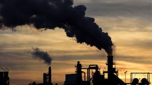
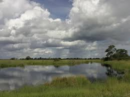
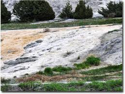
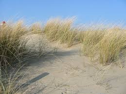
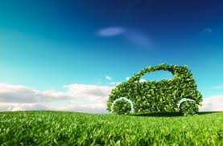

Preventions
Due to the rising sea levels being such an extensive and dominant global issue, numerous scientists have started to figure
out ways to prevent this issue from continuing or escalating to higher levels. A few ways that encourage the reduction of
these high levels are:
- Reducing your greenhouse gas footprint: Due to greenhouse gases being a huge contributor to the sea levels, a first step
would be by trying to reducing our carbon dioxide footprint or finding various ways to reduce the number of greenhouse gases we use daily.
- Protecting Wetlands: Wetlands are known as a solution for coastal areas during rainstorms, hurricanes, typhoons, and etc.
These lands absorb the precipitation and storm surge waters. Therefore, we should look forward to finding activities that
can preserve these wetlands.
- Using the right materials for specific reasons: Hard surfaces prevent water from spreading throughout into the ground
and result in an increase in runoff and erosion. By using stepping stones for our walkways, paver blocks for our patios,
and permeable pavement, we could increase the chances of allowing water to easily enter underground.
- Helping continue restoration: Dunes and grasses secure inland areas from wind and wave actions that preserve the shores.
In addition, dunes and sod banks are highly fragile areas. Therefore, by staying on the designated paths to avoid them support restoration.
- Finding alternative ways instead of driving: Multiple vehicles are sources of carbon dioxide production. You could
reduce the number of vehicles on the road by carpooling, walking, biking, or using mass transit. However, when driving,
you could turn off your car if you aren't doing anything for more than 30 seconds. As a result, this will help conserve fuel,
save money, and reduce the amount of greenhouse gas emissions.
The NASA Climate Change page on links includes more information about preventing climate change.
Return to the top of the page.





